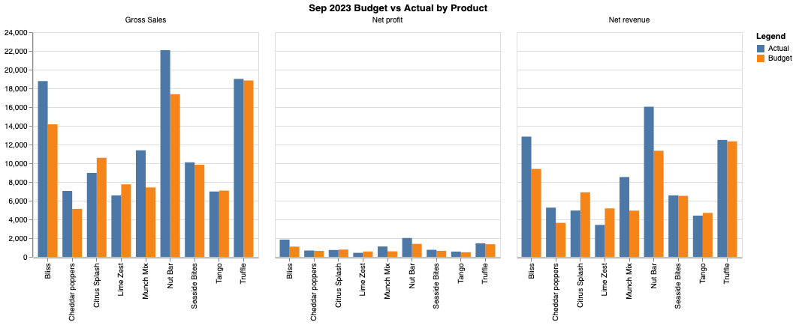
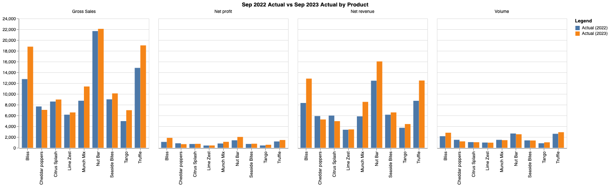

DataLila is a data analytics company that helps businesses make data-driven decisions based on their financial data. We present a solution to help you uncover the stories your data can tell. Our team of data scientists and financial analysts work together to provide you with the insights you need to make informed decisions about your business.
An On Prem / Local solution that enables a natural language interface to your financial data. Get completely reproducible, explainable results and visualizations in seconds.
1. Provide database schema and column metadata
2. Connect our solution directly to your database
3. Use the chatbot interface to ask questions about the data using your native language
4. Our system will generate a written and visual answer to your question and will also provide a step-by-step explanation of the logic and code that was used to arrive at the answer
“How was the performance at product level for the month of Sep'23 comparing the same with Budgets & Previous year?”
- Identify Key Terms
- ‘Performance’
- Based on knowledge of the database schema, key indicators for ‘Performance’ could include the following columns:
- Net Profit
- Gross Sales
- Net Revenue
- Volume (Only seen in the ‘Actual’ sheet)
-‘Product-Level’
- Comparisons performed in this calculation should be done after grouping the data based on each unique product
- Month/Year
- Data should be filtered on the specified month and year
- Identify suitable visualization
- Since the user is requesting a direct comparison of data from different time periods, generating grouped bar chart visualizations, one for Sep 2022 (Actual) and Sep 2023 (Actual) and one for Sep 2023 (Budget) and Sep 2023 (Actual) will best support the answer to the user’s query
- Filter the ‘Budget’ and ‘Actual’ tables on year==2023 and month== 'Sep' then calculate the aggregate sum values for each ‘Performance’ metric and for each unique product. Record and display each result.
- Filter the ‘Actual’ table on year==2022 and month=='Sep' then repeat the same aggregate sum calculations. Record and display the result.
- Calculate the percentage change for 2022 (Actual) and 2023 (Actual) and present the resulting table to the user
- Drop the ‘Volume’ column from the 2023 (Budget) and 2023 (Actual) aggregate tables and then perform the percentage change and present the resulting table to the user
- Using the aggregate tables generated in Step 2, create two combined dataframes, one for each comparison
- Set the index to be a MultiIndex using the Product Name and Performance Metric categories
- Using Altair, plot a grouped bar chart for each of the two combined dataframes with the following encodings:
- X = Product
- xOffset = Time Period
- Y = Aggregate Value
- Color = Time Period
- Column = Metric
- Generate plot
Percentage change in performance metrics from Sep 2022 (Actual) to Sep 2023 (Actual)
| Product | Net Profit | Gross Sales | Net Revenue | Volume |
|---|---|---|---|---|
| Bliss | 68.52% | 47.19% | 54.33% | 30.23% |
| Cheddar Poppers | -18.99% | -8.25% | -10.75% | -19.76% |
| Citrus Splash | 3.70% | 4.36% | -17.30% | -1.8% |
| Lime Zest | 2.39% | 6.77% | 1.86% | -2.36% |
| Munch Mix | 38.93% | 30.28% | 46.07% | -4.13% |
| Nut Bar | 44.82% | 1.92% | 28.75% | -5.16% |
| Seaside Bites | 6.04% | 12.27% | 6.92% | -1.60% |
| Tango | 30.56% | 40.89% | 18.66% | 20.19% |
| Truffle | 22.92% | 28.15% | 43.19% | 11.43% |
Percentage change in performance metrics from Sep 2023 (Budget) to Sep 2023 (Actual)
| Product | Net Profit | Gross Sales | Net Revenue | Volume |
|---|---|---|---|---|
| Bliss | 68.43% | 32.61% | 36.72% | N/A |
| Cheddar Poppers | 6.51% | 37.30% | 44.66% | N/A |
| Citrus Splash | -6.04% | -15.31% | -28.26% | N/A |
| Lime Zest | -24.36% | -15.23% | -34.08% | N/A |
| Munch Mix | 86.94% | 53.55% | 72.77% | N/A |
| Nut Bar | 45.44% | 27.08% | 41.51% | N/A |
| Seaside Bites | 17.07% | 2.62% | 0.77% | N/A |
| Tango | 15.67% | -1.33% | -6.07% | N/A |
| Truffle | 6.87% | 0.91% | 1.23% | N/A |
Comparison Sep 2023 (Budget) vs Sep 2023 (Actual)

Based on comparisons of Net Profit for each product category, it appears that all products exceeded budget expectations except for Citrus Splash and Lime Zest in September 2023.
Comparison Sep 2022 (Budget) vs Sep 2023 (Actual)

Based on comparisons of Net Profit for each product category, it appears that all products improved their Net Profit for the company from 2022 to 2023, except for Cheddar Poppers which saw a 19% decrease in profits over that time period.
Both Comparisons
Looking at both comparisons, it looks like the Bliss product showed a nearly 70% improvement when compared to both the actual performance in 2022 as well as the budgeted performance for 2023. Cheddar Poppers, Citrus Splash, and Lime Zest all showed either minimal increases in performance or significant decreases, suggesting that they are currently the worst performers in the month of September. Finally, Munch Mix and Nut Bar continue to remain strong performers.